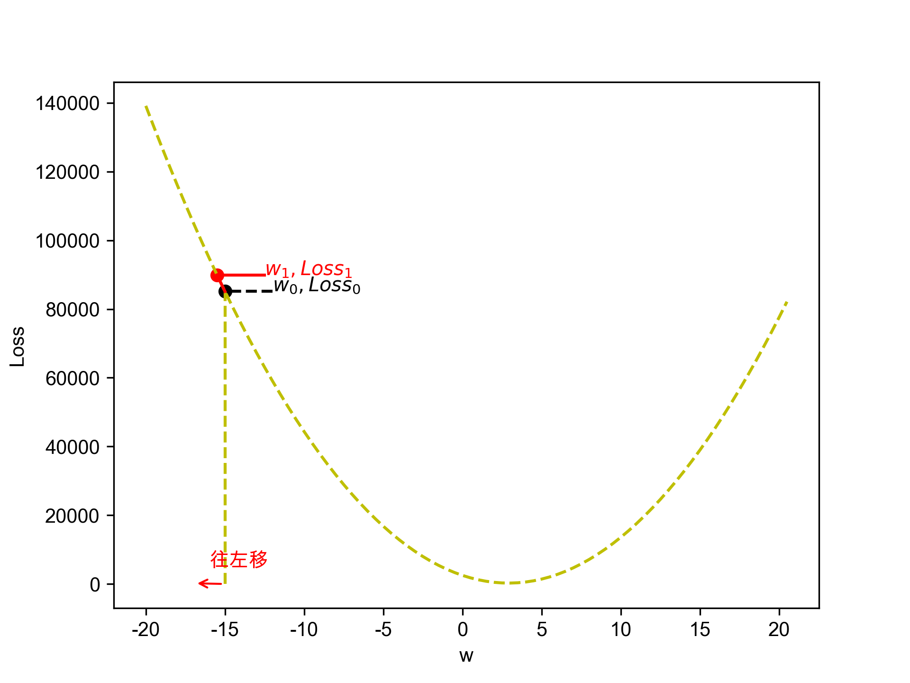

迴歸
Table of Contents

1. 關於迴歸
即，根據一組預測特徵（predictor，如里程數、車齡、品牌）來預測目標數值（如二手車車價）1、根據歷史股價來預測明天股價、根據路況來預測方向盤轉向及車速。
部份迴歸演算法也可以用來分類，例如Logistic，它可以輸出一個數值，以這個數值來表示對應到特定類別的機率，例如，某封email為垃圾郵件的機率為20%、某張圖片為狗的機率為70%。
1.1. 迴歸類型
迴歸問題可分為兩類：
- Linear regression:
- Logistic regression
1.1.1. Linear regression:
- 假設輸入變量(x)與單一輸出變量(y)間存在線性關係，並以此建立模型。
- 優點: 簡單、容易解釋
- 缺點: 輸入與輸出變量關係為線性時會導致低度擬合
- 例: 身高與體重間的關係
Linear regression可再細分為
1.1.2. Logistic regression
- 也是線性方法，但使用logist function轉換輸出的預測結果，其輸出結果為類別機率(class probabilities)
- 優點: 簡單、容易解釋
- 缺點: 輸入與輸出變量關係為線性時無法處理分類問題
1.1.3. 迴歸的目的
建立迴歸的目的在於從現有資料中找出規則，然後依此規則來對後續的新進資料進行預測。如圖1中有一些資料分佈，x、y軸為資料的兩個特徵值。

Figure 1: 原始資料分佈
我們可以畫出幾條直線來代表這些資料的趨勢，問題是：
- 怎麼畫
- 怎麼知道哪一條最有代表性
Figure 2: 根據原始資料畫出的幾條迴歸線
典型迴歸案例: Boston Housing Data
2. 迴歸原理
練習投藍的時後，我們需要知道籃筐位置，誤差多少，做出丟球的修正。 做 Machine Learning 也是一樣道理，我們需要 :
2.1. Step 1: Model, Data
- Model: \(y = w*x+b\)
- Data: 找一堆現成的資料
2.2. Step 2: Goodness of Function
- Training Data
- Loss function L: 越小越好 input: a function / output: how bad it is
- Pick the Best Function : \(f* = arg min L(f)\) 上述可以微分來求最佳解，即求 function L 的最小值
- 數值最佳解: Gradient Descent(找拋物線/面最低點)
2.3. 迴歸預測流程(以波士頓房價預測為例)
- Import the required module
- Load and configure the Boston housing data set
- Chekc the relation between the variable, using pairplot and correlation graph
- Descriptive statistics: central tendency and dispersion
- Select the required columns
- Train the test split
- Normalize the data
- Build the input pipeline for the TensorFlow model
- Model tranining
- Predictions
- Validation
3. 線性迴歸:年齡身高預測#1
3.1. 資料生成
這是當初上帝創造人類時決定人類身高的規則，我們也可以將之視為這組資料的模型，這個規則或模型是很神祕的，等一下我們要假裝我們不知道這個模型的存在，而迴歸的目的就在於想辦法猜出這個規則或模型。
import numpy as np import matplotlib.pyplot as plt n = 10 # 資料筆數 year = 5 + 25 * np.random.rand(n) # 年紀 height = 170 - 108 * np.exp(-0.2 * year) + 4 * np.random.randn(n) print(year) print(height)
[13.3, 16.2, 10.9, 28.7, 19.8, 14.2, 11.7, 26.6, 22.4, 18.3, 19.4] [163.61, 168.53, 155.06, 171.3 , 166.69, 160.98, 158.23, 165.27, 170.83, 161.31, 163.58]
3.2. 查看資料


3.3. 直線模型
我們可以在圖4中畫上無數條線，但，最能代表年齡和身高關係的線應該只有一條，我們要如何找出這條線？
首先，既然我們想以 直線 來表示我們想找的模型或規則，那我們就先把這條直線以下列數學示表示出來: \[y=ax+b\] 或 \[f(x)=ax+b\] 這樣的直線 \(y\) 或函數 \(f(x)\) 有無限多個，例如：
- \(f_1(x)=3x+2\)
- \(f_2(x)=4.5x-3.12\)
- \(...\)
- \(f_n(x)=-3x+50\)
迴歸的目的就是要從上述無限多個函數中找出一個最好的 \(f_?(x)\) ，這組函數擁有最好的參數 \(a,b\)(你也可以看成為直線 \(y\) 找到最適合的斜率 \(a\) 和截距 \(b\))。這也是現今許多機器學習模型的基本精神：找到一個擁有最佳參數的函數，或者說：從無數個可能的模型中挑出最好的一個。
為了從無限多個備選模型中找出最佳的，我們需要有一個評估機制。
3.4. 損失函數
損失函數(loss function)也稱為成本函數(cost function)，就是最常用來定義、衡量模型誤差的方法。以圖5為例，我們可以計算所有原始資料\((x_0, y_0) \dots (x_9, y_9)\) 離這條預測線的距離(預測結果為 \(\hat{y_0} \dots \hat{y_9}\))，這些距離( \(y_0 - \hat{y_0} \dots y_9 - \hat{y_9}\) )的總和越小，表示預測線離每一點越近，也就是說這個模型越準確。

Figure 5: 直線模型的均方誤差
圖5中的 \(y_i\) 為實際資料 \(x_i\) 對應的結果， 而 \(\hat{y_i}\) 則是將每個實際資料 \(x_i\) 丟入模型後的預測結果，計算 \(y_i\) 與 \(\hat{y_i}\) 誤差的方法稱為 殘差平方和 (Residual Sum of Squares, RSS)，計算公式為 \[ RSS = \sum_{i=1}^{n}(\hat{y_i}-y_i)^2 \] 把RSS再除以n就或是 均方差 (Mean Square Error, MSE)，即 \[ MSE = \frac{1}{n}\sum_{i=1}^{n}(\hat{y_i}-y_i)^2 \] 迴歸的任務就是把RSS或MSE最小化。
如何讓RSS/MSE最小化呢？
3.5. 方法一：暴力求解
為了找出哪一組參數 \(a,b\) 可以讓模型 \(y=ax+b\) 的預測誤差達到最小，我們可以將一些合理的a,b值可能組合都列出來，如圖6，我們列出了由參數 \(a\) (-40~40)、參數 \(b\) (40~160)的所有可能模型，圖中的 \(z\) 軸代表每一種模型產生的誤差(RSS)。由圖6可以看出兩件事:
- 參數 \(a\) 對模型誤差的影響遠大於參數 \(b\)
- 當參數 \(a\) 的值接近0時，所生成的模型會有較低的MSE，也就是模型預測能力較好

Figure 6: 不同a,b情況下的均方差
讓我們回憶一下等高線這個東西，如果我們把圖6當成某個山谷的地形圖(z軸為高度)，那我們就可以畫出這個區域的等高線圖7(先別管我是怎麼畫出來的)，從等高線圖7就能大概看出來當a的值約等於0、b的值約等於150時會有最低的SSE(如圖7中的紅點，這是我透過觀落陰得到的訊息)。

Figure 7: 不同a,b情況下的MSE(俯視/等高線)
總之，看起來是有辦法找到最佳的模型的(只是有點麻煩)，這個方法稱為梯度下降，在這裡我們先知道有這麼個方法、知道這個方法可以找出最佳模型就好，至於深入探討這個方法是如何運作這件事，等我搞清楚了再說吧(或是等你們上大學再自己去研究)…
3.6. 方法二: 站在巨人的頭頂
雖然從無數組 \((a,b)\) 中找出最好的一組看似困難，不過其實許多現成的相關模組已經有了這些功能，例如scikit-learn。以底下的程式為例：
1: import numpy as np 2: from sklearn.linear_model import LinearRegression 3: 4: year = np.array([13.3, 16.2, 10.9, 28.7, 14.2, 11.7, 26.6, 22.4, 18.3, 20.4]).reshape([-1, 1]) 5: height = np.array([163.61, 168.53, 155.06, 168.3 ,158.98, 158.23, 165.27, 170.83, 161.31, 163.58]) 6: 7: model = LinearRegression() 8: model.fit(year, height) 9: 10: slope = model.coef_ 11: intercept = model.intercept_ 12: heightHat = year * slope + intercept 13: 14: print('斜率/Slope:', slope) 15: print('截距/Intercept:', intercept)
斜率/Slope: [0.58182444] 截距/Intercept: 152.74006747354875
在上述程式碼中，真正與計算迴歸有關的只有第7行(利用scikit-learn建立一個線性迴歸模型)與第8行(把手上的10組 \((a,b)\) 資料丟進模型訓練)， 夠簡單吧，這樣我們就能畫出一條斜率約為0.58、截距約為152.74的最佳迴歸線(如圖8)，其模型為 \(f(x)=0.58x+152.74\)

Figure 8: 線性迴歸求解
根據這個模型，一個18歲的人，我們可以預測其身高為
1: year = 18 2: height = 0.58*year+152.74 3: print(f'根據模型預測，一個18歲的人其身高為:{height}公分')
根據模型預測，一個18歲的人其身高為:163.18公分
3.7. 逐步找出最佳解
雖然我們可以快速的利用如scikit-learn這類第三方模組求出最佳解，但是相信對於有志投入AI領域的你來說，光知道如何快速求解顯然遠遠不夠，讓我們來搞清楚這到底是怎麼完成的。
3.7.1. 隨機的力量
萬事起頭難，要找出最佳的參數組合 \((a,b)\) ，最合理的方式就是我們 閉上眼睛 在圖6中隨意點圈出一個點 \((a_0, b_0)\)，這就是我們的第一步，其結果就如圖9所示。有了這個開頭，我們接下來要做的事就是：
- 找出 一個方法 來判斷要由點 \((a_0, b_0)\) 點沿著這個曲面的 哪一個方向 前進 多遠 ，來到下一點 \((a_1, b_1)\)。也許是沿著曲面往上移一小段(如圖9中的藍色線段)、也許是沿著曲面往下移一小段(如圖9中的紅色線段)。
- 利用 同一個方法 來判斷接下來要由點 \((a_1, b_1)\) 點沿著這個曲面的 哪一個方向 繼續前進 多遠 ，來到下一點 \((a_2, b_2)\)
- 重複同樣的步驟，直到找到最佳的點 \((a_n, b_n)\) ，也就是這一點 \((a_n, b_n)\) 能使整個模型的SSE來到最小，讓模型具備最佳的預測效能。

Figure 9: 找出最佳a,b組合的方法
3.7.2. 何去何從
發現了嗎？其實我們就只是在求某個方程式的最小值。
到這裡我想你一定會發現上面那個方法的幾個漏洞：
- 我怎麼知道要往哪個方向移呢？
- 我怎麼知道要移動多長的距離呢?
- 我怎麼知道移動後的新位置比原來的位置好呢？
好吧，我也不知道。不如我們先跳過這個看起來太複雜的問題，先換個簡單點的來強化自信。
4. 保持距離以測安全
讓我們先來看一個更簡單的例子。
這是一組從R語言資料集偷來的資料，這個資料集有七百多組教學用的資料集，其中有一組簡單的資料集cars，裡面有50筆資料，每筆資料只有兩個欄位：
- speed: 車速
- dist: 所需剎車距離
資料分佈如圖10所示

Figure 10: 車速與剎車距離關係分佈圖
我們為了這組簡單的資料分佈建了一個如下的模型 \[dist=w*speed\] 建立這組模型的最終目的當然是希望輸入 車速 (\(speed\)) 後就能得到 預測的所需剎車距離 ( \(dist\) ) 。我們也可以用常見的數學表示法( \(x\) 為車速、\(y_{predicted}\) 為預測的剎車距離)： \[ y_{predicted} = w * x \] 或是更常見的寫法( \(\hat{y}\) 為預測的剎車距離)： \[ \hat{y} = w * x \] 我們的任務就是找到一個最佳的 \(w\) 值，也就是這個模型的參數。同時，為了評估不同 \(w\) 值下模型的優劣，我們當也要提出相對應的損失函數( \(\hat{y}\) 為模型預測的剎車距離、 \(y_i\) 為實際資料的剎車距離，\(n\) 為資料筆數，共有50筆資料)： \[ Loss = \frac{1}{n}\sum_{i=1}^{n}(\hat{y} - y_i)^2 \] 例如：
- 當 \(w\) 為-15時，Loss值為85113.26
- 當 \(w\) 為-10時，Loss值為44346.86
- 當 \(w\) 為 -5時，Loss值為16808.46
- 當 \(w\) 為 0時，Loss為2498.06
- 當 \(w\) 為 5時，Loss為1415.66
- 當 \(w\) 為 10時，Loss為17152.28
在這個例子中，我們的任務就變成：提出一個假設模型 \(f(x)=w*x\)，然後找出最理想的參數 \(w\)，讓這個模型可以俱備最好的預測能力(Loss值最小)。
4.1. 模型的目的
顯然，對於如何解出方程式(或是說找到最佳模型) ，一開始當然沒啥頭緒，那，不如就暴力一點吧，弄個窮舉法：試試從 \(w=-20\) try到 \(w=+20\) 吧，觀察一下損失函數Loss的變化：

Figure 11: 不同參數w下的損失函數Loss分佈圖
從圖11可以看出來，最低的loss值應該是介於20到-20沒錯的，現在我們來想辦法找出最好的 \(w\) 在哪裡。
4.2. 沿著曲線上下爬
雖然我們從圖11大概可以看出來模型大概在參數 \(w\) 介於0和5之間會有最小的Loss，也就是模型會最準確，但身為嚴謹的學術研究者，我們不能這樣蠻幹，這是土匪的行徑。面對未知的困難，我們要有嚴格的解題SOP，也就是要遵循「科學、理性、務實」的精神：閉著眼睛隨便給個 \(w\)。例如：-15，如圖12。
你看，我們這不就邁出成功的第一步了?
隨機就是這麼美而有力!!
Figure 12: 先隨機假設一個數(-15)為最佳參數w的值
有了出發點(我們估且稱之為 \(w_0\) 好了，如圖12)，接下來就只要決定下一個「較好的下一個 \(w\) 」是在 \(w_0\) 的左邊還是右邊(根據Loss值來判斷)，然後繼續往左或往右移(如圖13。
總之，我們只要決定以下兩個因素，就可以利用Python把模型的最佳參數 \(w\) 找出來了。
- 每次要往左或往右移多少距離?
- 這樣的修正動作要重複幾次？或者說，程式結束的條件為何？

Figure 13: 決定w應往哪個方向移動
4.3. 確定方向
相信學過幾何學的你一定有想到一種策略：切線。既然 \(w\) 與 \(Loss\) 的關係是如圖13的曲線，我們應該可以找出 \(w_0\) 這個點的 切線 ，根據這條切線的斜率(也就是點 \(w_0\) 的斜率)為正或負來判斷要往哪個方向移動，如果切線是負的，也就是一條左上右下的線，那我們就知道曲線的最低點應該是在這個點的右側。
讓我們從點 \(w_0\) 的 \(x\) 軸向左移動一段距離(例如5)，就會在曲線上找到 \(w_1\) 對應的 \(Loss_1\) ，然後連接點\((w_0, Loss_0)\) 、點\((w_1, Loss_1)\) ，就會得到一條經過點\((w_0, Loss_0)\) 的割線。

Figure 14: 決定w應往哪個方向移動#1
這條割線的斜率計算方式為 \[ Slope = \frac{\Delta Loss}{\Delta x} = \frac{Loss_0-Loss_1}{x_0-x_1} \] 讓我們進一步把 移動距離 縮到無限小，也就是把割線斜率中的 \(\Delta x\) 逼近於0，就能得到一條點 \((w_0, Loss_0)\) 的在曲線上的切線，其斜率計算方式為： \[f'(w_0)=lim_{w_1 \rightarrow w_0}\frac{f(w_1)-f(w_0)}{w_1-w_0}\]

Figure 15: 決定w應往哪個方向移動#2
以程式計算斜率的方式也很簡單，甚至不需要懂微分，所謂把 移動距離 縮到無限小，我們可以用作弊的方式，直接將 \(\Delta x\) 設為一個很小的值，例如 0.5。
1: from pydataset import data 2: import numpy as np 3: 4: # 取得資料集 5: cars = data('cars') 6: speed = np.array(cars['speed']) 7: dist = np.array(cars['dist']) 8: 9: # 計算Loss用的function 10: def loss_func(y_true, y_predict): 11: return y_true - y_predict 12: 13: w = np.arange(-20,21,0.5) 14: loss = [] 15: for i in w: 16: yHat = i * speed 17: loss.append(np.mean(loss_func(dist, yHat)**2)) 18: 19: 20: x, y = -5, loss[np.where(w == -5)[0][0]] 21: x1, y1 = -4.5, loss[np.where(w == -4.5)[0][0]] 22: # 計算切線斜率 23: print((y-y1)/(x-x1))
-4052.5999999999985
計算結果 \(Slope<0\) ，表示這是條左上右下的切線，顯然接下來該往右側去找到最低點。問題是：該往右邊移動多少距離呢？要移動幾次？
4.4. 確定移動距離與重複次數
由圖15中點 \((w_0, Loss_0)\) 的斜率可知應逐步往右移動w，Loss的值就會慢慢降下來，所以我們可以先這麼計畫：
- 每次由 \(w0\) 的 \(x\) 軸往右邊加0.5、直到Loss不再變小。
或換另一種說法：
- 每次往右邊加0.5、直到Loss開始變大(因為越過了曲線最低點)。
上述的Python實作程式碼如下：
1: from pydataset import data 2: import numpy as np 3: 4: # 取得資料集 5: cars = data('cars') 6: speed = np.array(cars['speed']) 7: dist = np.array(cars['dist']) 8: 9: # 計算Loss用的function 10: def loss_func(y_true, y_predict): 11: return y_true - y_predict 12: 13: w = np.arange(-20,21,0.5) 14: loss = [] 15: for i in w: 16: yHat = i * speed 17: loss.append(np.mean(loss_func(dist, yHat)**2)) 18: 19: # 找最佳w值, 這裡以x代表w值 20: x, y = -15, loss[np.where(w == -15)[0][0]] 21: while True: 22: loss = np.mean(loss_func(dist, x*speed)**2) 23: x += 0.5 24: newLoss = np.mean(loss_func(dist, x*speed)**2) 25: if newLoss >= loss: 26: print(f'STOP: w值:{x-0.5}, Loss:{loss}') 27: print(f'NEXT: w值:{x}, Loss:{newLoss}') 28: break 29: if int(x) % 5 == 0: 30: print(f'w值:{x}, Loss:{newLoss}')
逐步右移的控制主要由第21行的while負責，\(w\) 每次右移0.5，直到Loss值不再變小就停止(第25行)，為簡化輸出，每移動10次 \(w\) 我們就把對應的 \(w\) 和Loss輸出來觀察一下（第29行)。輸出結果如下：
w值:-10.5, Loss:47828.24 w值:-10.0, Loss:44346.86 w值:-5.5, Loss:18967.04 w值:-5.0, Loss:16808.46 w值:-0.5, Loss:3333.84 w值:0.0, Loss:2498.06 w值:0.5, Loss:1794.56 STOP: w值:3.0, Loss:261.26 NEXT: w值:3.5, Loss:351.44
由執行結果可發現隨著 \(w\) 值的增加，Loss值也隨之減少，直到 \(w\) 值為3時可以得到最低的Loss值(261.26)，過了這一點，Loss值便又開始增加。圖17為w值持續修正的模擬結果，圖16則為假設\(w\) 值為3所畫出的預測線(模型)。

Figure 16: 車速與剎車距離關係分佈及預測模型
然而，這個 \(w=3\) 的模型就是最佳模型嗎？你有什麼可以更快找到更精確的「使Loss最低的 \(w\) 值」的修正方案嗎？
Figure 17: 決定w應往哪個方向移動
4.5. 斜率與微分
為什麼 找出曲線上各點的斜率 這件事如此重要呢？原因有二
4.5.1. 頂點公式求函數解
如假設損失函數L為 \[ Loss = MSE = \frac{1}{n}\sum_{i=1}^{n}(\hat{y_i}-y_i)^2 \] 其中
- \(n=50\)(實際有50筆資料)
- \(\hat{y_i}\)為用模型\(y=wx\)所預測出來的剎車距離
- \(y_i\)為當實測車速為\(x_i\)時所對應的剎車距離
故
\begin{align} Loss=\frac{1}{n}\sum_{i=1}^{n}(\hat{y_i}-y_i)^2 \\ =\frac{1}{n}\sum_{i=1}^{n}(wx_i - y_i)^2 \\ =\frac{1}{n}\sum_{i=1}^{n}(w^2x_i^2 -2wx_iy_i + y_i^2) \\ =\frac{1}{n}(w^2\sum_{i=1}^{n}x_i^2 -2w\sum_{i=1}^{n}x_iy_i + ny_i^2) \\ \end{align}現在我們就得到一個一元二次方程式:\(ax^2+bx+c\)
雖然可以用微分來解，但是這個一元二次函數也可以用頂點公式來找出曲線頂點(模型最小值)，求出的最小Loss會出現在 \[ w=\frac{\sum\limits_{i=1}^{n}x_iy_i}{\sum\limits_{i=1}^{n}x_i^2} \] 因為當 \(a>0\) \[ ax^2+bx+c = a(x+\frac{b}{2a})+\frac{4ac-b^2}{4a} \] 故 函數在 \(x=\frac{-b}{2a}\) 時有最小值
以程式驗證如下：
1: from pydataset import data 2: import numpy as np 3: 4: cars = data('cars') 5: speed = np.array(cars['speed']) 6: dist = np.array(cars['dist']) 7: 8: print('最小Loss的參數w值:',sum(speed*dist) / sum(speed*speed))
最小Loss的參數w值: 2.909132143937103
4.5.2. 微分求函數頂點
當 \(a>0\)
\begin{align} f(x)=ax^2+bx+c \\ f'(x)=2ax+b \end{align}找曲線最低點、令函式為0 \[2ax+b=0\] 故 \(x=\frac{-b}{2a}\) 時有最小值
5. 線性迴歸:年齡身高預測#2
回到第3.7節以年齡預測身高的例子，我們提及要找出最佳的參數組合 \((a,b)\) ，最合理的方式是在圖6中隨意點圈出一個點 \((a_0, b_0)\) (如圖9)。接下來：
- 找出 一個方法 來判斷要由點 \((a_0, b_0)\) 點沿著這個曲面的 哪一個方向 前進 多遠 ，來到下一點 \((a_1, b_1)\)。也許是沿著曲面往上移一小段(如圖9中的藍色線段)、也許是沿著曲面往下移一小段(如圖9中的紅色線段)。
- 利用 同一個方法 來判斷接下來要由點 \((a_1, b_1)\) 點沿著這個曲面的 哪一個方向 繼續前進 多遠 ，來到下一點 \((a_2, b_2)\)
- 重複同樣的步驟，直到找到最佳的點 \((a_n, b_n)\) ，也就是這一點 \((a_n, b_n)\) 能使整個模型的SSE來到最小，讓模型具備最佳的預測效能。
假設損失函數L為 \[ L = MSE = \frac{1}{n}\sum_{i=1}^{n}(\hat{y_i}-y_i)^2 \] 因為 \(\hat{y_i}\) 代表直線模型 \(y=ax+b\) 的預測結果。
實際的做法就變成：
- 計算點 \((a_0, b_0)\) 的斜率，然後朝著 使Loss(MSE)減小得最快的方向 稍微移動 \(a, b\)
- 重複步驟1
5.1. 梯度(Gradient)
為了符合機器學習的表達習慣，我們稍微修正一下上面的式子，將 \(a,b\) 改為 \(w_0, w_1\) ，因為對機器學習來說， \(a,b\) 都是模型的權重(weight) ，訓練模型的目的就是找出最佳的權重，讓模型的預測最準確，所以上述式子就變成了 \(y=w_0x+w_1\) 。
假設我們就站在下圖(圖18)中的點 \((w_0, w_1)\) 上，環顧四周，由這點往上的方向可以用 \(L\) 對 \(w_0,w_1\) 的偏導數向量 \( \begin{bmatrix} \frac{\delta L}{\delta w_0} \frac{\delta L}{\delta w_1} \end{bmatrix}^T \) ，也稱之為 梯度(gradient) ，以符號 \(\nabla_wL\) 表示。為了使 \(L\) 最小，我們要朝著著 \(L\) 梯度的反方向前進，也就是 \( -\nabla_wL = -\begin{bmatrix} \frac{\delta L}{\delta w_0} \frac{\delta L}{\delta w_1} \end{bmatrix}^T \)

Figure 18: 隨意於曲面指定一點(a,b)
確定移動方向後，我們就要來研究出一個適當的移動距離。我們先定義幾個表達式：
- \(\nabla_wL\) 為 \(w\) 的函數
- \(w(\tau)\) 代表目前的 \((w_0, w_1)\) 所在位置
- \(w(\tau+1)\) 代表下一次移動的新 \((w_0, w_1)\) 所在位置
- \(\alpha\) 為一個大於0的數，稱為學習率，用來控制調整權重的步幅，其值越大，調整的幅度就越大。典型的值可能為 \(0.001\)
- \(y_i\) 為實際由第i個年齡 對應 到的身高
- \(\hat y_i\) 為模型由第i個年齡 預測出來 的身高
兩個權重的下一步的調整步幅為：
- \(w_0(\tau+1) = w_0(\tau)-\alpha\frac{\partial L}{\partial w_0}\)
- \(w_1(\tau+1) = w_0(\tau)-\alpha\frac{\partial L}{\partial w_1}\)
因為 \[L=\frac{1}{n}\sum\limits_{i=1}^{n}(\hat y_i - y_i)^2 = \frac{1}{n}\sum\limits_{i=1}^{n}(w_0x_i + w_1 - y_i)^2\] 對 \(w_0\) 求偏導數： \[\frac{\partial L}{\partial w_0} = \frac{2}{n}\sum\limits_{i=1}^{n}(w_0x_i + w_1 - y_i)x_i = \frac{2}{n}\sum\limits_{i=1}^{n}(\hat y_i - y_i)x_i\] 對 \(w_1\) 求偏導數： \[\frac{\partial L}{\partial w_1} = \frac{2}{n}\sum\limits_{i=1}^{n}(w_0x_i + w_1 - y_i)= \frac{2}{n}\sum\limits_{i=1}^{n}(\hat y_i - y_i)\] 即 \((w_0, w_1)\) 的下一次移動距離為：
- \(w_0(\tau+1) = w_0(\tau)-\alpha\frac{\partial L}{\partial w_0} = \frac{2}{n}\sum\limits_{i=1}^{n}(\hat y_i - y_i)x_i\)
- \(w_1(\tau+1) = w_0(\tau)-\alpha\frac{\partial L}{\partial w_1} = \frac{2}{n}\sum\limits_{i=1}^{n}(\hat y_i - y_i)\)
上面數學式中貌似有很複雜的計算，但是如果我們以Numpy的array來儲存 \(x_i, y_i, \hat y_i\)，就能利用Numpy的矩陣運算np.mean()輕易求出結果，例如當 \((w_0, w_1) = (-20, 70)\) (如圖18)，則下一個點梯度的計算方式為
1: import numpy as np 2: year = np.array([13.3, 16.2, 10.9, 28.7, 14.2, 11.7, 26.6, 22.4, 18.3, 20.4]).reshape([-1, 1]) 3: height = np.array([163.61, 168.53, 155.06, 168.3 ,158.98, 158.23, 165.27, 170.83, 161.31, 163.58]) 4: # 均方差的梯度 5: def dw(x, y, w): 6: yhat = w[0]*x + w[1] 7: d_w0 = 2*np.mean((yhat-y)*x) 8: d_w1 = 2*np.mean(yhat-y) 9: return d_w0, d_w1 10: w = dw(year, height, [-20, 70]) 11: print(w)
(-18134.659799999998, -917.54)
結果分別是 \(w_0, w_1\) 方向的斜率，可以看出斜率都非常小，且 \(w_0\) 斜率比 \(w_1\) 方向的斜度更大，這與由圖18觀察結果一致。
5.2. 實作
import numpy as np year = np.array([13.3, 16.2, 10.9, 28.7, 14.2, 11.7, 26.6, 22.4, 18.3, 20.4]).reshape([-1, 1]) height = np.array([163.61, 168.53, 155.06, 168.3 ,158.98, 158.23, 165.27, 170.83, 161.31, 163.58]) def mse(x, t, w): y = w[0] * x + w[1] mse = np.mean((y - t)**2) return mse # 均方差的梯度 def dw(x, y, w): yhat = w[0]*x + w[1] d_w0 = 2*np.mean((yhat-y)*x) d_w1 = 2*np.mean(yhat-y) return d_w0, d_w1 # 梯度法 ------------------------------------ def fit_gd(x, y): w_init = [-20, 70] # 初始參數 alpha = 0.001 # 學習率 tau_max = 100000 # 重複的最大次數 eps = 0.1 # 停止重複的梯度絕對值的閥值 w_hist = np.zeros([tau_max, 2]) w_hist[0, :] = w_init for tau in range(1, tau_max): dmse = dw(x, y, w_hist[tau - 1]) w_hist[tau, 0] = w_hist[tau - 1, 0] - alpha * dmse[0] w_hist[tau, 1] = w_hist[tau - 1, 1] - alpha * dmse[1] if max(np.absolute(dmse)) < eps: # 結束判斷 break w0 = w_hist[tau, 0] w1 = w_hist[tau, 1] w_hist = w_hist[:tau, :] return w0, w1, dmse, w_hist # 調用梯度法 W0, W1, dMSE, W_history = fit_gd(year, height) print('重複次數 {0}'.format(W_history.shape[0])) print('W=[{0:.6f}, {1:.6f}]'.format(W0, W1)) print('dMSE=[{0:.6f}, {1:.6f}]'.format(dMSE[0], dMSE[1])) print('MSE={0:.6f}'.format(mse(year, height, [W0, W1])))
重複次數 27678 W=[0.026711, 162.832008] dMSE=[0.004964, -0.099983] MSE=22.955476
6. 線性迴歸實作: 波士頓房價預測
本例中部份程式碼及文字來自What impacts Boston Housing Prices
6.1. 下載資料
1: import pandas as pd 2: 3: housing = pd.read_csv('https://raw.githubusercontent.com/letranger/AI/gh-pages/Downloads/boston_housing.csv')
也可以用tensorflow的load_data()直接下載，但這組沒有column title
1: import matplotlib.pyplot as plt 2: from tensorflow.keras.datasets import boston_housing 3: 4: (train_x, train_y), (test_x, test_y) = boston_housing.load_data()
6.2. 大概觀察一下資料集
1: print(type(housing)) 2: print(housing.shape) 3: print(housing.iloc[0])
<class 'pandas.core.frame.DataFrame'> (506, 14) crim 0.00632 zn 18.00000 indus 2.31000 chas 0.00000 nox 0.53800 rm 6.57500 age 65.20000 dis 4.09000 rad 1.00000 tax 296.00000 ptratio 15.30000 b 396.90000 lstat 4.98000 medv 24.00000 Name: 0, dtype: float64
這個資料集共有506筆資料，前13個為特徵值，最後一個medv為房價。其他特徵值分別代表:
- CRIM: per capita crime rate by town
- ZN: proportion of residential land zoned for lots over 25,000 sq.ft.
- INDUS: proportion of non-retail business acres per town
- CHAS: Charles River dummy variable (= 1 if tract bounds river; 0 otherwise)
- NOX: nitric oxides concentration (parts per 10 million)
- RM: average number of rooms per dwelling
- AGE: proportion of owner-occupied units built prior to 1940
- DIS: weighted distances to five Boston employment centres
- RAD: index of accessibility to radial highways
- TAX: full-value property-tax rate per $10,000
- PTRATIO: pupil-teacher ratio by town
- B: 1000(Bk - 0.63)^2 where Bk is the proportion of blacks by town
- LSTAT: % lower status of the population
- MEDV: Median value of owner-occupied homes in $1000’s
6.3. 資料預處理
6.3.1. 處理缺漏值
快速檢查是否有缺漏值
1: print(housing.isnull().sum())
crim 0 zn 0 indus 0 chas 0 nox 0 rm 0 age 0 dis 0 rad 0 tax 0 ptratio 0 b 0 lstat 0 medv 54 dtype: int64
刪掉有缺失值的資料
1: housing.dropna(axis=0, inplace=True) 2: print(housing.isnull().sum()) 3: print(housing.shape)
crim 0 zn 0 indus 0 chas 0 nox 0 rm 0 age 0 dis 0 rad 0 tax 0 ptratio 0 b 0 lstat 0 medv 0 dtype: int64 (452, 14)
6.3.2. 資料標準化
由第一筆訓練資料特徵housing.iloc[0]可以看出，每項特徵值的差異甚大，我們可以先對這些資料特徵進行標準化：
1: print(housing.iloc[0,:-1]) 2: 3: mean = housing.iloc[:,:-1].mean(axis=0) 4: housing.iloc[:,:-1] -= mean 5: std = housing.iloc[:,:-1].std(axis=0) 6: housing.iloc[:,:-1] /= std 7: 8: print(housing.iloc[0,:-1])
crim 0.00632
zn 18.00000
indus 2.31000
chas 0.00000
nox 0.53800
rm 6.57500
age 65.20000
dis 4.09000
rad 1.00000
tax 296.00000
ptratio 15.30000
b 396.90000
lstat 4.98000
Name: 0, dtype: float64
<string>:5: FutureWarning: Setting an item of incompatible dtype is deprecated and will raise in a future error of pandas. Value '0 -6.823009
1 -5.823009
2 -5.823009
3 -4.823009
4 -4.823009
...
501 -6.823009
502 -6.823009
503 -6.823009
504 -6.823009
505 -6.823009
Name: rad, Length: 452, dtype: float64' has dtype incompatible with int64, please explicitly cast to a compatible dtype first.
crim -0.566733
zn 0.217000
indus -1.176220
chas -0.289391
nox -0.024739
rm 0.347120
age -0.012727
dis 0.022210
rad -0.904489
tax -0.538187
ptratio -1.339563
b 0.394920
lstat -1.049614
Name: 0, dtype: float64
6.4. 觀察資料
6.4.1. 初步看一下房價的分佈
1: import matplotlib.pyplot as plt 2: import seaborn as sns 3: 4: sns.histplot(housing['medv']) 5: plt.savefig("images/housing-price.png", dpi=300)

Figure 19: 房價分佈概況
6.4.2. 各特徵值間的關係
1: correlation_matrix = housing.corr().round(2) 2: # annot = True 讓我們可以把數字標進每個格子裡 3: sns.heatmap(data=correlation_matrix, annot = True) 4: plt.savefig("images/housing-corr.png", dpi=300)
Figure 20: 特徵值間的闗係
由圖20可以看出：
- 跟MEDV（房價）高度相關的是LSTAT（中低收入戶佔當地居住人口的比例）和RM（房子有幾間房間）這兩個變數。
- 此外也看到DIS（到波士頓商業中心的距離）和AGE（屋齡），INDUS（非零售業土地使用比例）和ZN（居住使用土地比例）這兩組變數有多元共線性問題，所以未來如果要做其他模型，避免同時使用這兩組中的變數。
所以目前可以用LSTAT和RM來做出預測MEDV的模型。再次把這兩個變數跟房價變數的關係畫出來，可以看到兩者和房價變數都接近線性關係：
1: # 設定整張圖的長寬 2: plt.figure(figsize=(20, 10)) 3: features = ['lstat', 'rm'] 4: target = housing['medv'] 5: for i, col in enumerate(features): 6: # 排版1 row, 2 columns, nth plot：在jupyter notebook上兩張並排 7: plt.subplot(1, len(features) , i+1) 8: # add data column into plot 9: x = housing[col] 10: y = target 11: plt.scatter(x, y, marker='o') 12: plt.title(col) 13: plt.xlabel(col) 14: plt.ylabel('medv') 15: plt.savefig('images/housing-2var.png', dpi=300)

Figure 21: Caption
6.4.3. 準備訓練用的資料
先拿兩項特徵值來試一下水溫: lstat和rm
1: import numpy as np 2: X = housing[['lstat', 'rm']] 3: Y = housing['medv'] 4: print(X) 5: print(Y)
lstat rm
0 -1.049614 0.347120
1 -0.373898 0.116169
2 -1.203924 1.261927
3 -1.380974 0.981486
4 -0.992763 1.204939
.. ... ...
501 -0.287809 0.374115
502 -0.383644 -0.335236
503 -0.942409 0.948493
504 -0.805966 0.675551
505 -0.578562 -0.470207
[452 rows x 2 columns]
0 24.0
1 21.6
2 34.7
3 33.4
4 36.2
...
501 22.4
502 20.6
503 23.9
504 22.0
505 11.9
Name: medv, Length: 452, dtype: float64
6.5. 分割訓練集與測試集
訓練集佔80%、測試集佔20%
1: # train_test_split 2: from sklearn.model_selection import train_test_split 3: X_train, X_test, Y_train, Y_test = train_test_split(X, Y, test_size = 0.2, random_state=5) 4: # 再用.shape看切出來的資料的長相（列, 欄） 5: print(X_train.shape) 6: print(X_test.shape) 7: print(Y_train.shape) 8: print(Y_test.shape)
(361, 2) (91, 2) (361,) (91,)
6.6. 建立模型
new出一個LinearRegression的物件後，用特徵變數的訓練資料和目標變數的訓練資料產生一個模型。接著將特徵變數的測試資料倒進這個新產生的模型當中，得到預測的目標變數資料2。
1: # Modeling 2: from sklearn.linear_model import LinearRegression 3: reg = LinearRegression()# 學習/訓練Fitting linear model 4: reg.fit(X_train,Y_train)
6.7. 測試效能
將這個預測的目標變數資料（預測結果）和目標變數的測試資料（真實結果）做R2-score：
1: # 預測結果Predicting using the linear model 2: reg.predict(X_test)# 真實結果：Y_test# 測試準確度： 3: print('R2:', reg.score(X_test, Y_test))
R2: 0.6048366146231109
得到的這個R2-score讓我們可以知道特徵變數對於目標變數的解釋程度為何，而越接近1代表越準確。這裡大約是66%，解釋程度算是相當好的2。
6.7.1. 模型效能視覺化
把剛剛的預測的目標變數資料和測試的目標變數資料畫成散佈圖
1: # plotting the y_test vs y_pred 2: Y_pred = reg.predict(X_test) 3: plt.cla() 4: plt.tight_layout() 5: plt.figure(figsize=(10,8)) 6: 7: plt.scatter(Y_pred, Y_test) 8: plt.xlabel('Y_pred') 9: plt.ylabel('Y_test') 10: plt.savefig('images/boston-perf.png', dpi=300)

Figure 22: Caption
6.8. 找出線性模型
由LinearRegression()找出線性模型的intercept和coefficient
1: print('intercept:',reg.intercept_) 2: print('coefficient::',reg.coef_) 3: print('lstat:',reg.coef_[0]) 4: print('rm:',reg.coef_[1])
intercept: 23.662167506495486 coefficient:: [-3.2284783 4.66331239] lstat: -3.228478297753095 rm: 4.663312387946355
線性模型為：\(medv=23.66 + -3.22 \times lstat + 4.66 \times rm + error\)
7. [作業]依據期中考成績預測期末考成績 TNFSH
7.1. Data
- 線上資料: https://letranger.github.io/AI/PythonScores.csv
- 資料中有424筆記錄，每筆記錄分別為學生的
- id: 學號
- class: 平時成績
- task: 作業成績
- mid: 期中考成績
- final: 期末考成績
7.2. Task
你的任務是建立一個模型，輸入一個或多個特徵值(class, task, mid)來預測期末考成績(final)，其他相關任務包括:
- 部份學生的期中、期末考有缺考行為，請將這些缺考記錄填入0分
- 畫出所有特徵資料的分佈狀況(直方圖)
- 將所有分數間的相關以視覺化方式表現出來
- 將資料集分割為訓練集(70%)及測試集(30%)
- 請自行決定你要用多少個特徵值來預測，並以測試集來評估模型效能，輸出分數(R2-score)
- 列出你找出的模型方程式
Footnotes:
Hands-On Machine Learning with Scikit-Learn: Aurelien Geron